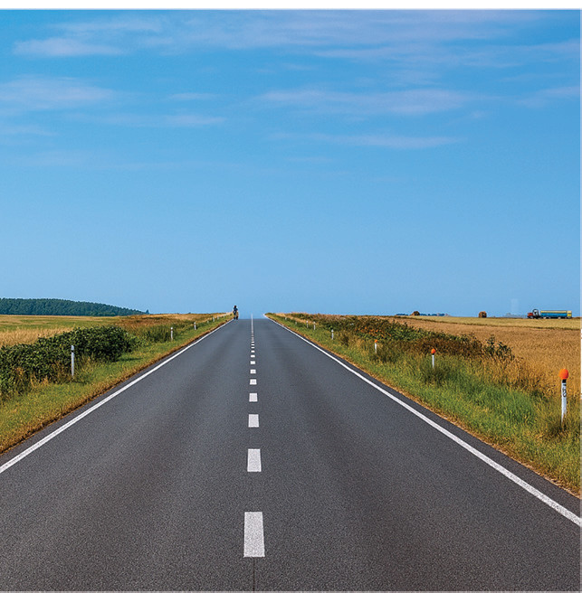
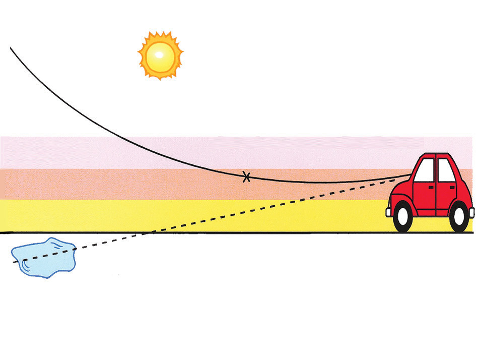

Mirages can commonly be observed when you walk down a tarmac roadway on a sunny day. As you walk down the roadway, there appears to be a puddle of water on the road several metres (about 100 m) ahead of you. Yet, when you arrive at the perceived location of the puddle, you recognise that the puddle is not there. Instead, the puddle of water appears to be another one hundred metres before you. The appearance of the puddle of water is simply an illusion because of the mirage.
Mirages occur on sunny days because the sun heats the roadway to high temperatures. The heated roadway, in turn, heats the surrounding air, keeping the air just above the roadway at a higher temperature than the air above. Hot air tends to be optically less dense than cooler air. Thus, the layers of air just above the roadway are optically less dense than the air further above the roadway. This creates a non-uniform optical medium. Consequently, as light travels from the sun, it passes through the cooler air layers towards the hot air layers. This means light travels from an optically denser medium to a less dense medium. Thus, light will be refracted upon striking the boundary between the two layers of air. Therefore, light bends upwards. As the light continues to traverse different air layers, it is bent more upwards to the extent that it reaches your eyes instead of hitting the road. Your brain traces the light straight back along the direction from which it comes to your eyes. Figure 5.10 (a) shows an image of the sky, which is refracted by air with non-uniform optical density, appearing as a puddle of water just above the roadway. Figure 5.10 (b) illustrates the formation of an atmospheric mirage. The mirage phenomenon can also occur in bodies of water such as seas, lakes, ponds, and deserts.

(a) Mirage observed above the roadway

Light from the sky Total internal reflection occurs here Cool air Warm air Hot air Pool of water (image of the sky)(b) Formation of an atmospheric mirage
Figure 5.10: Road mirage
Task 5.2
Organise a walk with your friends down the tarmac roadway (if any) on a sunny day and try to observe the occurrence of the mirage.
Discuss the conditions necessary for the occurrence of a mirage.